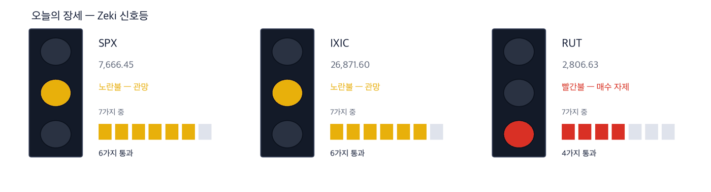
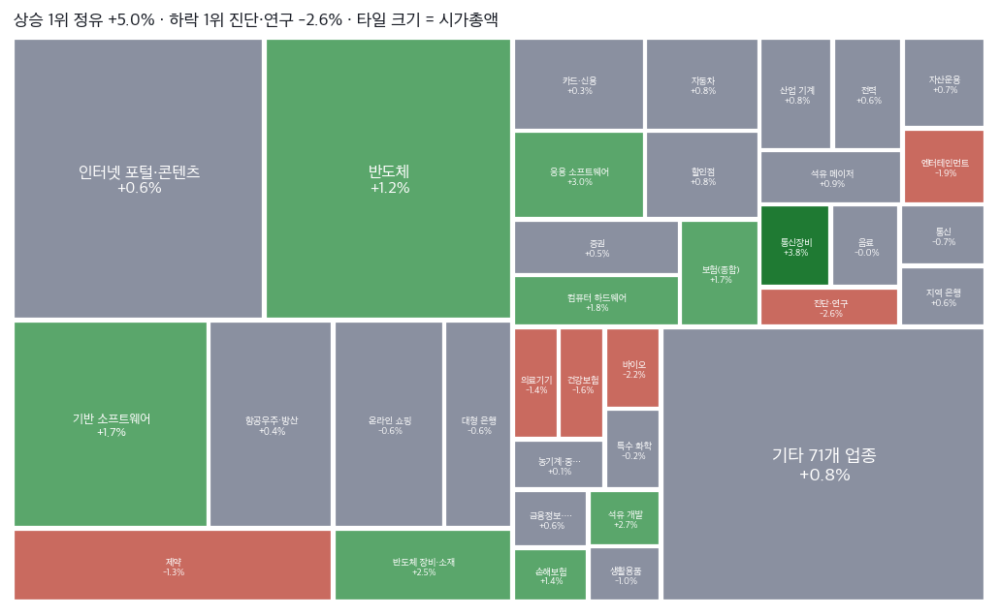
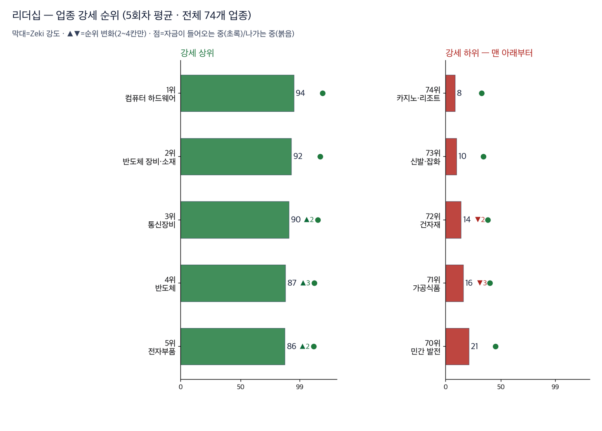
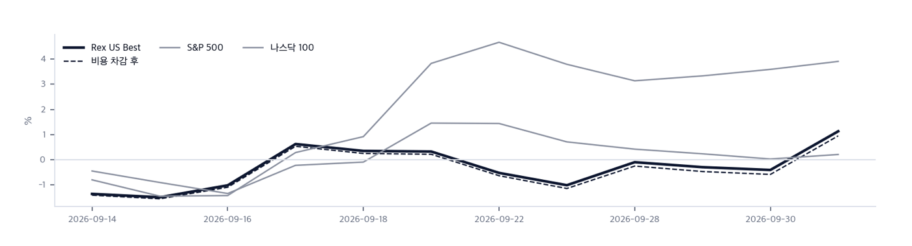

|
ZekiRex™ Apex US — 2026년 10월 2일
오늘의 판단 · 1/3
데이터 기준 10/1 (ET) 종가 · 밤사이 서울 10/2 종가(현지시간) |
ZekiRex™ |
|
|
미 10년물 5.33% 찍고 반락… 인상 기대 후퇴 |
| 저희가 정한 규칙이 고른 종목과 그 성적을 매일 그대로 싣습니다. 맞았든 틀렸든 지우지 않습니다. |
|
THE REX CALL
10/1 뉴욕에서 미 국채 10년물 금리가 장중 5.33%를 넘었다가 5.24%로 내려 마쳤습니다. 연준 인사들이 서두를 까닭이 없다고 하자 10월 인상 기대가 줄었습니다. S&P 500은 0.19% 올랐습니다.
보유는 9/30과 같은 세 종목입니다. 델·마라톤페트롤리엄·HF싱클레어를 그대로 들고 있고 현금은 79.4%입니다.
오늘 반드시 알아야 할 것
1. 10/1 미 국채 10년물은 장중 5.33%를 넘어 2002년 이후 최고를 찍고 내렸습니다(월스트리트저널). 블룸버그는 프랑스 재정 걱정에 미 국채로 안전자산 수요가 몰렸다고 전했습니다. 2. 제퍼슨 부의장과 보먼 부의장은 금리를 서두를 까닭이 없다는 뜻을 냈습니다(파이낸셜타임스·블룸버그). 로이터는 10월 인상 기대가 사라졌다고 전했습니다. 3. 액센츄어는 회계 4분기 실적과 내년 전망이 예상을 넘어 급등했습니다(IBD). 인공지능이 컨설팅 수요를 줄인다는 걱정을 뒤집었습니다(파이낸셜타임스). 4. 미국 정부는 10/1 유럽에 경유 비축분을 즉시 풀라고 요구했습니다. 트럼프 대통령은 경유 수출 금지를 거론했습니다(BBC). 유럽연합은 10/2 긴급 회의를 엽니다. 5. 나이키는 10/1 장 마감 뒤 1분기 매출이 예상에 못 미쳤고 올해 매출 감소를 내다봤습니다(월스트리트저널). 중국 판매가 또 급감했습니다(CNBC).
| |
 초록불은 매수 우위, 노란불은 관망, 빨간불은 매수 자제입니다. 칸은 7가지 조건 중 몇 가지를 만족하는지이고, 많을수록 오르는 종목이 넓게 퍼져 있습니다. |
국면 추이 — 8월 23일부터 9월 20일까지 기록이 중단돼 최근 흐름이 아닙니다. 10회 모두 노란불입니다 — 바뀐 날이 없습니다 방향 — 어디까지 왔나. Zeki 신호등은 7가지 조건을 세어 정합니다. S&P 500과 나스닥 종합이 6가지, 러셀 2000이 4가지를 만족합니다. 지난 판과 같습니다. 러셀 2000은 50일 이동평균 아래에 머물러 빨간불입니다.
| |
| 오늘의 조치 |
| 오늘 신규 매매 없음. 규칙이 요구하지 않는 날에 거래하지 않는 것도 하나의 결정입니다. |
|
| 오늘 하나만 깊이 보면 |
|
10년물 5.33% 찍고 반락… 2년물 4.61%로 하락
10/1 미 국채 10년물은 장중 2002년 이후 최고를 넘은 뒤 5.24%로 마쳤습니다. 2년물은 4.61%로 내렸습니다. 연준 발언이 가까운 인상 기대부터 지웠다는 뜻입니다. 같은 날 WTI는 2.71% 올랐고 달러인덱스는 102.1로 올랐습니다. 유가와 달러는 금리를 따라 내려오지 않았습니다. 왜 그런가. 2년물은 연준의 다음 몇 달을, 10년물은 더 먼 성장과 물가를 봅니다. 연준 발언은 가까운 인상 기대를 지웠지만 먼 쪽은 그대로 둡니다. 유가가 오르는 한 10년물이 5% 아래로 내려올 근거는 아직 약합니다. 다음에 무엇이. 다음 판에서 볼 것은 2가지입니다. 10/2 고용 보고서 뒤 10년물이 5.24% 아래로 더 내려오는지, 그리고 유럽이 경유 비축분 방출을 정하는지입니다.
그래서 우리는: 금리에 예민한 성장주를 들고 계시다면 10/1 금리 하락을 방향 전환으로 읽기는 이릅니다. 10/2 고용 보고서가 약하면 금리가 더 내리고, 강하면 10년물이 다시 5.33%를 시험할 수 있습니다. 정유주는 유가를 따라 올랐지만 반대 위험도 있습니다. 유럽이 경유 비축분을 풀면 정제 마진이 줄어, 저희 기준을 넘은 61종목 가운데 정유 4곳이 함께 흔들립니다.
Rex Lens™
| |
| 그 밖에 알아야 할 것 |
| 온세미, 시냅틱스를 주당 123달러 현금 인수… 규모 줄여 · 온세미컨덕터는 10/1 시냅틱스를 주당 123달러, 약 57억 달러에 현금으로 사기로 했습니다. 처음보다 규모를 줄인 거래입니다(월스트리트저널). (Wall Street Journal) → 10년물이 5%를 넘는 때에 인수 대금을 주식 대신 현금으로 치릅니다. 인수를 앞둔 반도체 회사를 들고 계시다면 인수 자금의 이자 비용이 이익을 얼마나 깎는지 먼저 보십시오. | | 아마존, 엔비디아 칩 80억 달러어치 투자자에 넘기는 방안 추진 · 파이낸셜타임스는 10/2 아마존이 엔비디아 칩 80억 달러어치를 투자자에게 넘기는 방안을 추진한다고 전했습니다. 인공지능 투자로 부푼 재무 부담을 덜려는 것입니다. (Financial Times · Reuters) → 인공지능 장비를 사는 회사들이 비용을 장부 밖으로 옮기기 시작했다는 신호입니다. 서버·저장장치 회사를 들고 계시다면 고객이 투자를 줄이는지, 돈을 대는 방법만 바꾸는지를 나눠 보십시오. | | 미 해군, 레이시온에 SM-6 미사일 244억 달러 계약 · 로이터는 10/1 미 해군이 RTX의 레이시온에 SM-6 미사일 244억 달러 계약을 줬다고 전했습니다. 재고가 줄었다는 걱정 속에 나온 계약입니다. (Reuters · The Straits Times) → 계약 금액은 여러 해에 걸쳐 매출이 됩니다. 방산 주식을 들고 계시다면 계약 발표보다 생산 능력이 납기를 따라가는지를 먼저 보십시오. | | 뉴멕시코주, 메타에 최대 400억 달러 벌금 요구… 판결 남아 · 로이터는 10/1 뉴멕시코주가 개인정보 재판 뒤 메타에 최대 400억 달러의 벌금을 요구했다고 전했습니다. 법원 판단은 아직 나오지 않았습니다. (Reuters · Channel NewsAsia) → 요구액은 판결이 아닙니다. 광고 회사 주식을 들고 계시다면 금액보다 판결이 광고 방식에 제한을 거는지를 먼저 보십시오. | | 트윌리오, 10/6 S&P 500 편입… 워너브러더스디스커버리 대체 · 트윌리오는 10/6 개장 전 S&P 500에 들어가, 파라마운트와 합병하는 워너브러더스디스커버리 자리를 채웁니다(IBD·마켓워치). (Investor's Business Daily · MarketWatch) → 지수 편입은 그날 지수 펀드의 기계적 매수를 부릅니다. 편입 소식에 따라 사신다면 그 매수가 편입일에 끝난다는 점을 함께 보십시오. |
|
한국과 미국을 잇는 것: 서울에서는 10/2(현지시간) 코스피가 0.46% 오른 7,003.74로 마쳐 5거래일 만에 7,000선을 되찾았습니다(머니투데이). 외국인은 9월 한 달 국내 주식을 20조원 넘게 팔았습니다(매일경제). |
|
|
시장이 오늘 한 일 · 2/3
데이터 기준 10/1 (ET) 종가 · 밤사이 서울 10/2 종가(현지시간) |
ZekiRex™ |
|
|
| 핵심 지표 |
S&P 500 7,666 +0.19% · 고점 −1.7% 7,666으로 0.19% 올라 52주 고점에서 1.7% 아래입니다. 7가지 중 6가지를 만족합니다. 금리가 장중 고점에서 내려오자 소폭 올랐습니다. 신고가권 | 나스닥 종합 26,872 +0.04% · 고점 −1.4% 26,872로 0.04% 올라 52주 고점에서 1.4% 아래입니다. 7가지 중 6가지로 노란불입니다. 마이크론은 3.03% 올랐습니다. 신고가권 | 러셀 2000 2,807 +0.35% · 고점 −8.5% 2,807로 0.35% 올라 52주 고점에서 8.5% 아래입니다. 7가지 중 4가지로 빨간불입니다. S&P 500(+0.19%)과 나스닥 종합(+0.04%)보다 더 올랐지만 50일 이동평균 아래에 있습니다. 박스권 | 미 국채 10년 5.24% 5.24%로 마감해 1년 범위의 맨 위입니다. 장중 5.33%를 넘었다가 내려왔습니다. 10년물이 5% 위에 머무는 동안 주가를 매기는 기준이 높습니다. 과열 | 달러인덱스 102.1 과열 | 포트폴리오 +6.67% 현금 79% · 보유 3종목 세 종목을 들고 있고 현금이 79.4%입니다. 델 +24.16%, HF싱클레어 +17.73%, 마라톤페트롤리엄 +16.67%입니다(10/1 17:12 ET 계좌 기준). 손절가를 밑돈 종목은 없습니다. 설정 이후 |
|
Rex Pulse 거시 지표 16종 1년 추이  Rex Pulse™ — 지수·가상자산 / 통화 / 원자재 / 채권 16종, 1년 흐름과 50일 평균값(점선) · 기준 뉴욕 10/1 종가, 서울 10/2 종가(현지시간) |
미 국채 10년물과 30년물은 1년 범위의 맨 위인 과열 구간에 있고, 10/1에는 둘 다 내렸습니다. 달러인덱스는 102.1로 올라 과열 구간에 머뭅니다. WTI는 $92.9로 올랐지만 1년 범위 안에서는 적정 구간입니다. 구리는 상단권, 금은 하단권입니다. 금리가 하루 내렸어도 달러와 유가가 그대로라는 것은 돈을 빌리는 값이 높은 채로 머문다는 뜻입니다. 보실 것은 10년물이 5.24% 아래로 한 번 더 내려오는지입니다. |
업종 히트맵 — 오늘의 상승·하락 지도  색은 당일 등락(짙을수록 큼), 타일은 시가총액입니다. 상단에 당일 상승·하락 1위가 적혀 있고, 큰 칸이 움직인 날이 지수가 움직인 날이라는 뜻입니다 — 아래 리더십 순위(추세의 힘)와 함께 읽으십시오. |
| 리더십 — 업종 강세 순위 |
 이 그림 읽는 법 | 막대 | 그 업종 종목들을 Zeki 강도 순으로 세웠을 때 종목 절반이 그 위, 절반이 그 아래인 값입니다. 최근 5회차를 평균해 하루치 흔들림을 걷어냈습니다. | | ▲▼ 숫자 | 하루 전보다 순위가 몇 칸 움직였는지입니다. 1칸은 너무 작고 5칸 이상은 절반이 되돌아와서(실측) 2~4칸만 적습니다. | | 점 | 20거래일 자금 순위의 방향입니다. 초록이면 들어오는 중, 붉으면 나가는 중입니다. | | 공동 순위 | 값이 같으면 같은 순위입니다. 억지로 가르지 않습니다. | | 강세 상위 | 강도가 가장 높은 업종들입니다. 자리가 열리면 여기서부터 찾습니다. | | 강세 하위 | 전체 업종 가운데 맨 아래입니다. 번호는 왼쪽과 같은 잣대라, 38개 업종이면 38위가 가장 약합니다. 지금 새로 살 자리가 아니고, 들고 계신 종목이 여기 속하면 손절가부터 확인하실 자리입니다. 바닥에서 돌아서는 업종은 막대보다 점이 먼저 초록으로 바뀝니다. | | 번호가 건너뛰면 | ＋ 표시가 붙은 업종입니다. 맨 아래 다섯에 들지는 않았지만 본문이 짚었거나 저희가 들고 있어 함께 실었습니다. 자료가 빠진 것이 아닙니다. |
| 순위 | 업종 | Zeki 강도 | 변화 |
|---|
| 1위 | 컴퓨터 하드웨어 | 94 | ▼1 | | 2위 | 반도체 장비·소재 | 92 | ▲1 | | 3위 | 통신장비 | 90 | ▲2 | | 74위 | 카지노·리조트 | 8 | ▼1 | | 73위 | 신발·잡화 | 10 | 그대로 | | 72위 | 건자재 | 14 | ▼2 |
|
| 수급 — 거래로 되짚은 자금 흐름 |
|
수급과 거래량을 한 줄로 | 종목 | 수급 3개월→2주 | 거래량 | 어떻게 읽나 |
|---|
| ConAgra Brands CAG | D → E ↓ | 1.75배 | 주의 — 등급이 내리는데 물량이 늘었습니다 | | Arcelor Mittal NY Registry Shares NEW MT | B → E ↓ | 1.30배 | 주의 — 등급이 내리는데 물량이 늘었습니다 | | MGM Resorts International MGM | E → E = | 2.73배 | 관심✗ — 3개월도 2주도 사는 쪽입니다 | | AGNC Investment AGNC | E → E = | 1.83배 | 관심✗ — 3개월도 2주도 사는 쪽입니다 | | Realty Income O | E → E = | 1.71배 | 관심✗ — 3개월도 2주도 사는 쪽입니다 | | Weyerhaeuser Company WY | E → E = | 1.56배 | 관심✗ — 3개월도 2주도 사는 쪽입니다 | | Lineage Inc LINE | E → E = | 1.45배 | 관심✗ — 3개월도 2주도 사는 쪽입니다 | | Viavi Solutions VIAV | A → A = | 1.38배 | 관심✗ — 3개월도 2주도 사는 쪽입니다 |
거래량은 최근 5거래일 평균 ÷ 50일 평균입니다. ✓ 는 저희 진입 규칙(MACD 라인 > 0)도 통과했다는 뜻이고, ✗ 는 수급은 좋지만 규칙 밖이라는 뜻입니다. 이 읽는 법이 맞는지는 지금 세고 있습니다. |
결론은 아직 없습니다 — 칸마다 9건이고 60건이 필요합니다. 하루 9건씩 쌓이므로 약 6거래일 뒤에 답이 나옵니다. 그때 답하는 것은 「매수세로 돌아선 종목이 정말 올랐나, 매도세로 돌아선 종목이 정말 내렸나」입니다. 9월 18일부터 세고 있습니다 — 매도세 · 3개월도 2주도 9건 · 매도세 · 최근 2주부터 9건 · 매수세 · 3개월도 2주도 9건 · 매수세 · 최근 2주부터 9건.
미국에는 일별로 누가 샀는지 공시가 없습니다. 기관 보유는 분기에 한 번 그것도 45일 늦게 나옵니다. 그래서 이 그림은 사람이 아니라 거래를 봅니다 — 0.50 이 기준이고, 오른쪽으로 갈수록 3개월 동안, 위로 갈수록 최근 2주 동안 오르는 날에 거래가 몰렸다는 뜻입니다.
업종 — 값의 강세와 돈의 흐름을 나란히
돈이 먼저 온 곳 — 값은 아직
| 업종 | 강세 | 자금 | 20거래일 |
|---|
| IT서비스 | 77 | 8 | +0.044 |
| 자동차 판매 | 81 | 22 | +0.009 |
| 의료기기 | 65 | 24 | +0.007 |
값만 센 곳 — 돈은 빠지는 중
| 업종 | 강세 | 자금 | 20거래일 |
|---|
| 건강보험 | 31 | 83 | -0.078 |
| 리츠(의료) | 39 | 91 | -0.085 |
| 트럭 운송 | 38 | 81 | -0.074 |
강세 순위 — Zeki 강도(12개월 가중)로 세운 순위입니다. 최근 5회차를 평균해 하루치 흔들림을 걷어냈습니다.
자금 순위 — 20거래일 순매수로 세운 순위입니다. 값이 아니라 돈이 들어온 양을 봅니다.
공동 순위 — 값이 같으면 같은 순위를 줍니다. 억지로 가르지 않습니다.
두 순위가 어긋나면 — 그 자리가 볼 만합니다. 돈이 먼저 오면 값이 아직인 것이고, 값이 먼저 세면 돈이 빠지는 중일 수 있습니다.
| Rex 25™ — 당일 등락률 전체 순위 |
| 01 CVI CVR Energy+6.61% | | 02 ● MPC Marathon Petroleum+6.25% | | 03 MTRN Materion+5.77% | | 04 ● DINO HF Sinclair+5.01% | | 05 DOCN DigitalOcean Holdings+4.81% | | 06 ALNT Allient+3.90% | | 07 PSX Phillips 66+3.49% | | 08 MU Micron Technology+3.03% | | 09 LPG Dorian LPG+2.78% | | 10 KEYS Keysight Technologies+2.70% | | 11 P Everpure+2.56% | | 12 STX Seagate Technology Hol+2.52% | | 13 ARW Arrow Electronics+2.04% | | 14 CVE Cenovus Energy+1.83% | | 15 MRX Marex Group+1.72% | | 16 OKTA Okta+1.68% | | 17 ● DELL Dell Technologies+0.70% | | 18 AMD Advanced Micro Devices+0.65% | | 19 CHEF The Chefs' Warehouse+0.35% | | 20 SN SharkNinja-0.19% | | 21 PRLB Proto Labs-0.51% | | 22 WT WisdomTree-1.07% | | 23 CGAU Centerra Gold-1.10% | | 24 DGII Digi International-3.73% | | 25 IMAX Imax-4.16% |
|
8,012종목 가운데 61종목이 저희 기준을 넘었고 그중 위 25종목을 싣습니다. 맨 위는 마이크론·AMD·시게이트·델(Zeki 강도 98)입니다. 디지털오션과 키사이트가 들어오고 아르셀로미탈과 오셔니어링이 빠졌습니다. 하루 상승 상위 5종목 가운데 3종목이 정유 회사입니다. CVR에너지 +6.61%, 마라톤페트롤리엄 +6.25%, HF싱클레어 +5.01%로, 셋 다 50일 평균보다 적은 거래로 올랐습니다. 마테리온은 평균보다 20% 많은 거래로 5.77% 올랐습니다. 하락 쪽에서는 아이맥스가 평균보다 49% 많은 거래로 4.16% 내렸습니다. 정유주가 적은 거래로 오른 것은 큰손이 아직 따라붙지 않았다는 뜻입니다. 마이크론은 평균보다 45% 많은 거래로 3.03% 올랐습니다. 마라톤페트롤리엄·HF싱클레어·델은 저희 보유 종목이며 모두 손절가까지 여유가 있습니다. |
| ● 표시가 우리 보유 종목입니다. 순서는 등락률만 따릅니다 — 하락 상위에 보유 종목이 있어도 그 자체가 매도 신호는 아닙니다. 매도는 −8% 손절과 오실레이터 이탈, 둘뿐입니다. |
| 관문을 통과한 종목 — 자리가 없어 담지 못한 이름들 |
| 반도체·하드웨어 8 | | MU Micron Technology, I | RS 98 | $1,097.39 | | AMD Advanced Micro Devic | RS 98 | $615.73 | | STX Seagate Technology H | RS 98 | $945.57 | | P Everpure, Inc. | RS 96 | $134.13 | | ALNT Allient Inc. | RS 95 | $115.95 | | TSM Taiwan Semiconductor | RS 85 | $459.20 | | QRVO Qorvo, Inc. | RS 85 | $112.21 | | DGII Digi International I | RS 91 | $73.39 | | 소재·광물 3 | | CGAU Centerra Gold Inc. | RS 92 | $21.54 | | TECK Teck Resources Ltd | RS 83 | $65.22 | | SCCO Southern Copper Corp | RS 87 | $199.22 | | 에너지·정유 2 | | LPG Dorian LPG Ltd. | RS 95 | $56.59 | | PSX Phillips 66 | RS 93 | $264.23 | | 금융 1 | | MRX Marex Group Limited | RS 91 | $70.96 | | 소비 1 | | FIGS FIGS, Inc. | RS 88 | $14.08 |
|
왜 못 담았나. 규칙상 자리는 넷뿐이고 각 자리에 총자산 25%가 들어갑니다 — 한 종목이 −8%에 걸려도 계좌 전체로는 2% 손실이 되도록 맞춘 구조입니다. 자리를 비우는 길은 손절과 오실레이터 이탈 둘뿐이라, 더 좋은 후보가 나와도 갈아타지 않습니다.
통과 목록이 말하는 것. 61개가 38개 업종에 흩어져 있고 상위 3개 업종을 합쳐도 12종목(20%)뿐입니다. 시장의 강세는 넓습니다. 우리 3자리는 에너지·정유 2, 반도체·하드웨어 1로 나뉘어 있고 가장 큰 쪽이 에너지·정유입니다. 아래는 그중 종합점수 상위 15개이며, 매수 추천이 아니라 자리가 열리면 작업을 시작할 순서입니다. |
| 한 줄 정리: Zeki 신호등은 노란불입니다. S&P 500은 52주 고점에서 1.7% 아래로 고점 가까이에 있습니다. 그러나 러셀 2000은 빨간불에 머물러 있습니다. 큰 회사는 버티고 작은 회사가 약한 모습입니다. 고점 근처라는 표시보다 신호등을 먼저 보십시오. 신호등은 내려가는 쪽 변화를 그날 바로 반영하고, 올라가는 쪽은 3거래일을 확인한 뒤에 반영합니다. |
|
|
|
우리가 한 일 · 3/3
데이터 기준 10/1 (ET) 종가 · 밤사이 서울 10/2 종가(현지시간) |
ZekiRex™ |
|
|
기준 2026-10-01 17:12 ET 실제 운용 계좌를 그대로 비춥니다 종목·비중·매매·손절가는 모두 실제 계좌의 것입니다. 이 지면에서 고른 것은 하나도 없습니다. 계좌 금액과 주식 수는 싣지 않습니다. 추천이 아닙니다. | 종목 | 비중 | 손익 | 현재가 | 손절가 | 여유 | 보유 기간 | 다음 이벤트 | | MPC | 8.3% | +16.7% | $420.15 | $331.32 | +26.8% | 39일 | 실적 11-03 | | DINO | 3.5% | +17.7% | $112.70 | $88.07 | +28.0% | 44일 | 실적 10-28 | | DELL | 8.8% | +24.2% | $541.72 | $401.41 | +35.0% | 39일 | 실적 11-27 | | 현금 | 79.4% | 단기 국채 ETF(USFR)에 예치해 둡니다 |
|
포트폴리오 누적 수익률 대 벤치마크 지금 지수와의 차이 — S&P 500 대비 +7.02%p · 나스닥100 대비 +4.34%p 개시 이후 시간가중수익률은 +6.67%입니다(8/11~9/29, 34거래일, 계좌 세션 계산). 같은 기간 SPY는 -0.57%, QQQ는 +2.82%였고 최대 낙폭은 -8.67%였습니다. 34거래일은 실력과 운을 가릴 길이가 아닙니다. 이 수치는 규칙을 지켰는지 보는 기록이지 앞으로를 약속하는 수가 아닙니다. 지금 봐야 할 것은 최대 낙폭입니다. 같은 규칙으로 언제든 다시 겪을 수 있는 폭입니다. |
실제로 사고판 기록 | 09-02 | USFR | 매수 | $50.47 | | 08-24 | MPC | 매수 | $360.13 | | 08-24 | DELL | 매수 | $436.32 | | 08-19 | DINO | 매수 | $95.73 |
값은 실제로 사고판 값 그대로입니다. 주식 수와 금액은 싣지 않습니다. |
| Rex US Best — 이 뉴스레터에 실린 이름들의 성적표 |
무엇인가. 이 뉴스레터에 이름이 오른 회사들을 모아 만든 지수입니다. 관문을 통과한 종목과 포트폴리오 보유 종목을 합쳐 최대 스물아홉 곳까지, 모두 같은 비중으로 담습니다. 명단은 판이 나가는 날 그대로 적어 두고 뒤에 고치지 않습니다 — 지나고 나서 좋았던 것만 골라 넣으면 어떤 성적표도 좋아 보이기 때문입니다. 무엇을 위한 것인가. 저희가 지면에 적은 이름이 실제로 값을 하는지 숫자로 남기기 위해서입니다. 그래서 같은 기간 S&P 500 · 나스닥 100과 나란히 놓고, 사고파는 비용을 뺀 뒤의 숫자도 함께 싣습니다. 숫자 읽는 법. Zeki 강도는 같은 기간 다른 주식과 견준 주가의 힘을 100점 만점으로 매긴 것입니다. 100점에 가까울수록 많이 오른 쪽입니다. 아닌 것. 살 수 있는 상품이 아니고, 추천도 아니며, 저희 계좌의 성적도 아닙니다. |
 이 그림 읽는 법 | 무엇인가 | 그날 편지에 실린 이름 전부(Rex 25 + 보유 종목)를 똑같은 무게로 담았다면 어떻게 됐을지입니다. 살 수 있는 상품이 아니라 저희 명단의 성적표입니다. | | 두 선 | 실선은 비용 전, 점선은 매매비용을 뺀 뒤입니다. 명단이 바뀌면 갈아타는 비용이 들기 때문에 둘을 함께 싣습니다. | | Best 의 뜻 | 시장에서 최고라는 뜻이 아니라 저희 기준으로 가장 높은 점수를 받은이라는 뜻입니다. | | 길이 | 짧은 구간은 운과 실력을 가르지 못합니다. 120거래일이 쌓이기 전까지는 이 숫자로 판단하지 마십시오. |
|
Rex US Best — 지수 출범 이후 (9/11→10/1) | Rex US Best | +0.95% | | 기준 | | S&P 500 | +0.21% | | +0.74%p | | 나스닥 100 | +3.91% | | −2.96%p |
12거래일 · 비용을 뺀 값입니다. 비용 전은 +1.13%입니다. 오른쪽은 우리가 앞선 폭입니다. | 지수 대비 −2.96%p. 12회차째입니다. 저희가 미리 정한 신뢰 문턱은 120회차이고 지금은 120회 가운데 12회째입니다. 이 숫자로는 아직 잘한다고도 못한다고도 말할 수 없습니다. |
12거래일치입니다. 짧은 구간은 운과 실력을 가르지 못하므로 120거래일이 쌓이기 전까지는 이 숫자로 판단하지 마십시오. 많이 오른 쪽 | CVR Energy CVI | +6.61% — 값은 지난 1년 중 가장 높습니다. | | Marathon Petroleum MPC | +6.25% — 값은 1년 최고가에 1% 안쪽까지 왔습니다. | | Materion MTRN | +5.77% |
많이 내린 쪽 | Imax IMAX | −4.16% | | Digi International DGII | −3.73% | | Centerra Gold CGAU | −1.10% |
새로 들어온 종목 | Keysight Technologies KEYS, DigitalOcean Holdings DOCN | | 저희 조건을 새로 갖춰 명단에 올랐습니다 |
빠진 종목 | Oceaneering International OII | 9월 16일부터 9거래일, −4.83%. Zeki 강도가 88점으로 내려 39위가 되어 빠졌습니다 | | Arcelor Mittal NY Registry MT | 9월 29일부터 2거래일, −5.00%. Zeki 강도가 87점으로 내려 59위가 되어 빠졌습니다 |
|
| Rex Radar™ — 앞으로의 일정 |
| 이번 주의 핵심 — 가장 무거운 일정은 10/2 08:30 ET(KST 10/2 21:30) 9월 고용 보고서입니다. IBD는 뱅가드 자료가 2009년 이후 첫 고용 감소를 가리킨다고 전했습니다. | 10/2(금) 08:30 ET 9월 고용 보고서약하면 금리가 10/1에 이어 더 내리고, 강하면 10년물이 다시 5.33%를 시험할 수 있습니다. | 10월 6일(화) 08:30 ET 미국 상품·서비스 무역 (8월분)나라·품목별 수입입니다. 한국산 반도체·컴퓨터 수입이 한국의 대미 수출과 맞는지 봅니다. | 10/28(수) HF싱클레어 실적저희 보유 종목입니다. 유가가 다시 오른 자리에서 정제 마진이 버티는지 보여 줍니다. | 11/3(화) 마라톤페트롤리엄·AMD 실적마라톤페트롤리엄은 저희 보유 종목이고, AMD는 명단 맨 위 종목입니다. |
|
|
| 2026-10-01 종가 기준 심사 8,012종목 중 등급 산출 4,004종목 가운데 61종목이 조건을 통과했습니다. 조건 통과는 매수 추천이 아닙니다. |
| 출처: 야후 파이낸스, 16:00 ET 종가 · 서울외국환중개 고시환율(네이버 금융) · 한국 국고채·회사채 3년 금리: 네이버 금융 · 야후 파이낸스 |
|
본 리포트는 정보 제공 목적이며 개별 투자 자문이 아닙니다. ZekiRex™ Apex US는 실제 운용 계좌를 규칙 기반으로 운용합니다. 종목·비중·매매·손절가는 모두 그 계좌의 것입니다. 계좌 금액과 주식 수는 싣지 않습니다. 성과는 입출금을 뺀 수익률이며 세금은 반영되지 않았습니다. 후보를 고르는 자료에는 상장폐지된 회사가 빠져 있습니다. 살아남은 회사만 세는 셈이라 걸러낸 성과가 실제보다 높게 나옵니다. 과거의 성과는 미래를 보장하지 않으며, 투자에는 원금 손실 위험이 따릅니다. |
| This is the Rex Way, ZekiRex™ |